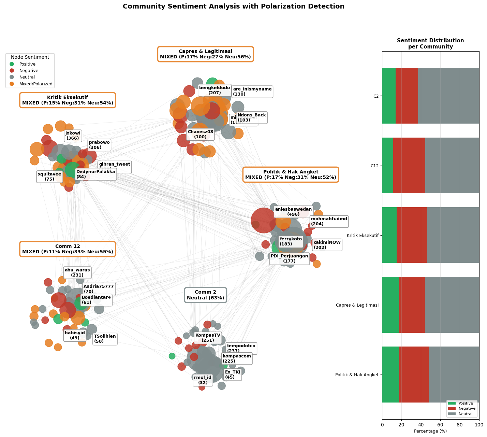

Photo caption: Graph Network Community Detection research.
[WRITER'S NOTE] Dear reader, this section uncovers the story of my research journey. As part of WRAP Researchship program held by Telkom University, i became a research assistant for Dr.Fitriyani who served as the Head of Online Informatics Study Program. Her research primarily focuses on Graph Network, Opinion Mining, Community Detection, Sentiment Analysis involving Big Data and Data Scraping.
For the main research, i co-wrote a research paper called “Mapping Political Sentiment and Hate Speech on Social Media during Indonesia's 2024 Election using IndoBERT-based Spatiotemporal Analysis.” It was accepted for publication in JUTIF, a SINTA 2 accredited journal.
Also wrote a paper as the first author published in the IEEE ICDSG 2026 conference proceedings, which is indexed in IEEE Xplore and Scopus with similar scope of research, scheduled for conference in 27th November 2026.
In simple terms: both papers looked at how people talk about politics and hate speech on social media, using an AI language model called IndoBERT to study posts from Indonesia's 2024 election.
Throughout the research process, I helped prepare and process large amounts of social media data, build machine learning models, and analyze the resulting datasets. I also began a new ongoing research involving Graph Networks that explores how relationships between user's comments from social media could be represented through graph.
Outside of the research itself, I also took on the role of Assistant Lecturer for the ICT Global Insight course from March to June 2025, where I helped deliver the course, assist students, and grade their work.